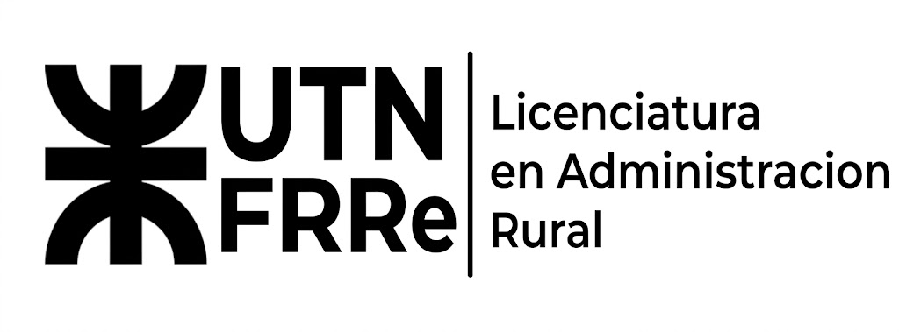

LAR (Lic. en Administracion Rural)

Acerca de Licenciatura en Administracion Rural
En este apartado encontrarás la información acerca de todo el cursado de la carrera, información importante, plan de estudios y también sobre el cursado de ingreso a la facultad.
Sobre la carrera:
Esta carrera se enfoca en la gestión, organización, planificación y optimización de empresas y organizaciones del sector agropecuario, agroindustrial y rural, tanto en el ámbito público como privado. Los profesionales en este campo deben integrar diversos conocimientos, como economía, administración, contabilidad, legislación agraria, producción agropecuaria y comercialización, para desarrollar estrategias eficientes y sustentables que impulsen el crecimiento y la competitividad de las empresas del sector.
Perfil Profesional:
El Licenciado/a en Administración Rural está preparado/a para planificar, dirigir, gestionar y evaluar emprendimientos agropecuarios y agroindustriales, optimizar los recursos humanos, financieros y tecnológicos, y tomar decisiones estratégicas en mercados complejos. Su formación también lo capacita para la asesoría, la consultoría y la investigación en el ámbito de la economía y gestión rural.
| Horarios Disponibles | Horarios de Referencia | Plan de Estudio |
| Tarde | 14:15 a 18:15 hs | Licenciatura-en-Administracion-Rural.pdf |
| Noche | 19:00 a 23:00 hs | Licenciatura-en-Administracion-Rural.pdf |
Plan de estudio
Al tratarse de sus primeros años de implementación como carrera de grado, actualmente se encuentra disponible y vigente de forma transitoria el plan de estudios de la tecnicatura afín como trayecto formativo inicial de referencia.
Curso de Ingreso (Seminario Universitario):
curso de ingreso
El curso de ingreso se puede realizar estando en el último año del colegio y se necesita presentar DNI y constancia de alumno regular
¿Qué es?
El Seminario Universitario es el primer paso obligatorio para ingresar a cualquiera de las carreras de grado de la Universidad Tecnológica Nacional – Facultad Regional Resistencia (UTN FRRe). Su objetivo es articular la formación de la escuela secundaria con la vida universitaria, fortaleciendo los conocimientos fundamentales necesarios para un cursado exitoso.
¿A quién está dirigido?
Está destinado a todos los aspirantes a ingresar a la facultad, permitiendo realizarlo de manera anticipada a quienes se encuentren cursando el último año de la escuela secundaria, así como a aquellos que ya hayan completado sus estudios secundarios.
Modalidad y Contenidos:
Durante el cursado se evalúan y nivelan contenidos esenciales en áreas clave como Matemática, Física, Lectura Comprensiva / Introducción a la Universidad y asignaturas específicas según la carrera elegida.